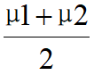
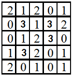
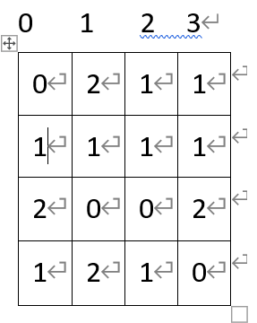
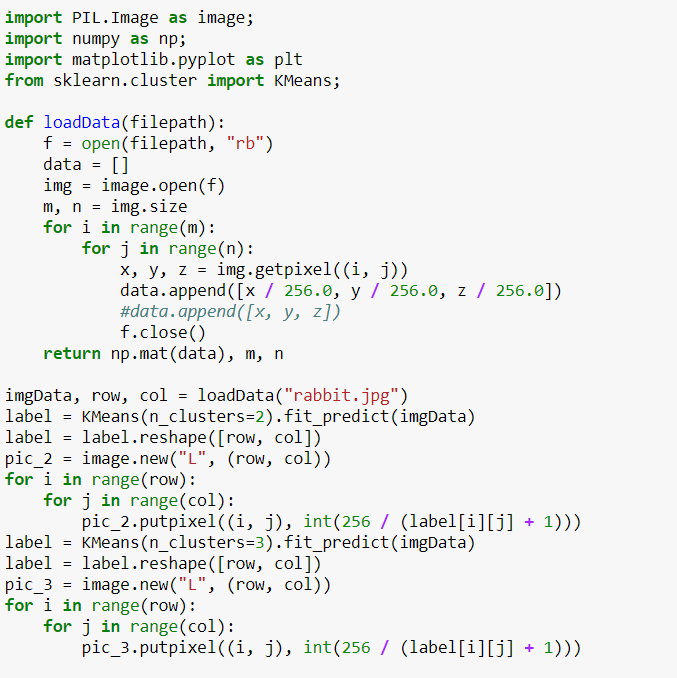
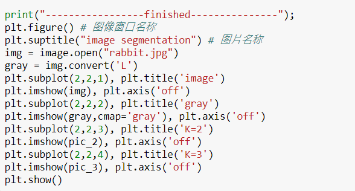
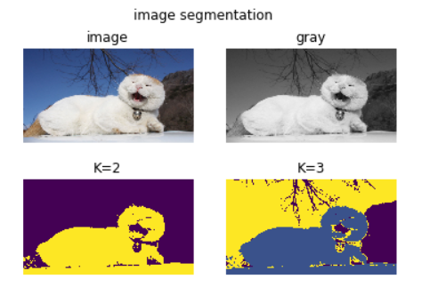
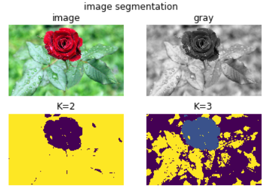
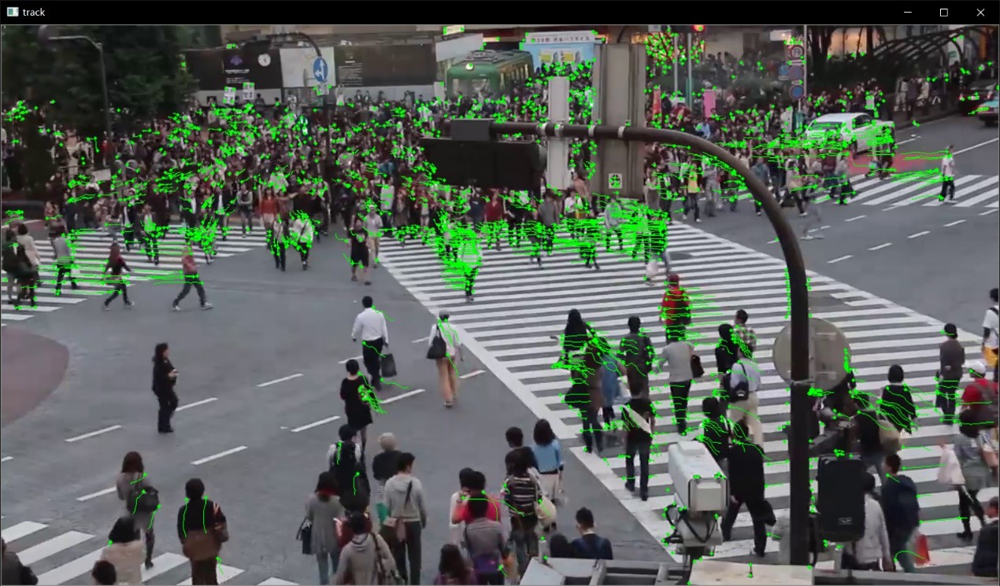

计算机视觉概论
1. 什么是计算机视觉？
答：计算机是指机器，视觉是指人对世界的感知。所以计算机视觉是通过让摄影机和电脑代替人眼对目标进行识别、跟踪和测量等行为，从图像或者多维数据中获取信息的一门学科。
2. 计算机视觉要完成的主要任务是什么？
答：计算机视觉的任务是用图像创建或恢复现实世界模型，然后认知现实世界。让计算机具有对周围世界的空间物体进行传感、抽象、判断的能力，从而达到识别、理解的目的。
3. 请将数字图像处理的主要知识点自己回顾或整理一下，如果还没学过，自己通过网络资源初步了解一下，然后把主要的知识点加以整理，然后记录在这里。
答：数字图像处理主要有两个目的：改善图示信息以便人们解释理解；为存储、传输和表示而对图像数据进行处理，便于机器理解。数字图像处理常用的几种方法有：灰度变换，对图像的单个像素进行操作，目的是处理对比度和阈值；空间域滤波，对图像每个像素的邻域进行处理，锐化图像以及一些改善性能的目的；频率域滤波，通过一些傅里叶变换来进行操作图像，目的是锐化图像或者平滑图像；图像复原与重建，通过一些滤波器来进行噪声的复原和消除；彩色图像处理，最常见的图像，存在三通道，一般进行彩色到灰度的变换，再进行下一步操作。更深入的应用还有，小波和多分辨率处理；图像压缩，通过霍夫曼编码、Golomb编码以及其他一些编码计算公式来进行有损压缩和无损压缩；形态学图像处理；图像分割；图像的表示和描述；目标识别等。
图像处理相关基础
1. 常见的滤波器有哪几种？分别说明它们的功能。
答：
线性(均值)滤波器：用来减少图像灰度的“尖锐”变化，减少噪声。即过滤了高频信号，因此也被称之为低通滤波器。
中值滤波器：强迫滤波器区域内突出的亮点更像它周围的值，以消除孤立的亮点。用来去除噪声。
最大值滤波器：用于发现图像中最亮的点，可以用来过滤“胡椒”噪声。
最小值滤波器：用于发现图像中最暗的点，可以用来过滤“盐”噪声。
拉普拉斯滤波器：高通滤波器，突出边缘信息，同时也要包含背景区域信息，可以用来图像增强。
平滑滤波器：用于平滑处理，如图像由于量化不足产生的虚假轮廓时，同时，也可以用于去除噪声。
锐化滤波器：增强边缘信息，可用于边缘提取。
2. 图像金字塔有哪些用途？
将粗糙尺度图像通过插值计算扩展为较细的尺度图像。可以用于图像分割、目标识别、图像理解、视觉感知、消除噪声、分析纹理、标记图像特征。
3. 在实际应用中，哪些应用需要低分辨率特征，请举出具体实例说明。
视频压缩：由于自身显示器的限制还有流量带宽的区别，网络上视频一般都提供多个画质分辨率，如果显示器分辨率不高以及为了节省流量，可以用低分辨率来观看视频。
图片打马赛克：想要在超清图片上的某个部位变得模糊，打上马赛克，让人看不清，这里需要用到低分辨率特征。
微信头像缩略图：超清图片分辨率高，内存大，存储以及传输所消耗资源也高，就采取图片压缩的方式，减小图片大小，又不能丢失图片原来的轮廓，这里需要用到低分辨率特征。
图像特征
1. 什么是图像的对应？图像特征点在对应中的作用是什么？
答：1）图像的对应是利用特征算法，找到两个图像中符合向量匹配的图像特征点。
2）图像特征点的作用：用来描述不同的图像，做图像切割、对齐等图像变换操作；利用多幅二维图像来进行三维图像的重建、复原。
2. 图像对齐时，常用的特征有哪些？
答：颜色特征、纹理特征、形状特征、空间位置特征、局部区域特征、边缘特征、点特征。
3. 你知道利用SIFT算子描述特征时，图像对齐的步骤吗？
1）生成高斯差分金字塔（DOG金字塔），尺度空间构建
2）空间极值点检测（关键点的初步查探）
3）稳定关键点的精确定位
4）稳定关键点方向信息分配
5）关键点描述
6）特征点匹配
7）图像对齐
图像对齐
1. 图像对应的本质是什么？
答：图像对应的本质：可以看作是参数拟合的问题，利用两个图像之间匹配的特征点，将变换模型进行拟合。
2. 图像对齐有哪些用途？
答：图像拼接、目标识别、图像变换、模板匹配。
3. 图像对齐的常见步骤有哪些？
1) 随机抽取当前图像帧和另一幅图像间的一组特征点，计算基础矩阵
2) 利用这些特征点计算组间变换矩阵
3) 根据计算的矩阵，求得局内点
4) 利用所有的正确匹配点重新计算基础矩阵
5) 在此基础上重新搜索正确的匹配点对
6) 重复4，5步骤，直至匹配点对的数目达到稳定状态。
7) 找到两个图像之间的对齐关系。
二值图像分析
1. 二值图像有哪些用途？（可以查阅文献说明）
答:
边界跟踪算法：利用二值图像识别中的图像轮廓，来实现的边界跟踪。
目标识别：基于二值图像的灰度变化，进行物体的精确识别跟定位。
提取图像的连通区域：利用图像二值化，找出图像变化的连通区域，再根据先值面积消除法达到去除图像中所有前景和背景噪声的效果。
2. 说明彩色图像二值化计算的步骤。
答:
先进行灰度化，灰度化的操作一般是将图像RGB的值用一定的权值来计算得到。
然后进行二值化，利用阈值分割，从图像中分出前景和背景，实现二值化。
3. 均值迭代求取阈值的二值化步骤是怎样的？
答：
选择一个初始化的阈值T
使用阈值T将图像的像素分为两部分：G1包含灰度满足大于T，G2包含灰度满足小于T。
计算G1中所有像素的均值μ1,以及G2中所有像素的均值μ2。
计算新的阈值：T’=

重新迭代步骤2-4，直到计算得到新的阈值T’小于预先确定的阈值为止。
纹理特征及分析
1. 简单说明纹理分析和研究的主要目的是什么？
答：纹理分析是通过一定的图像处理提取出来纹理特征参数，从而获得纹理的定量或定性描述的处理过程。
目的是研究纹理的观赏特性。
2. 什么是纹理？
纹理是一种普遍存在的视觉现象，目前有两个定义：
一个定义是按一定规则对元素或者基元进行排列所形成的重复模式。
另一个定义是如果图像函数的一组局部属性是恒定的，或者是缓变的，或者是近似周期性的，则图像中的对应区域具有恒定的纹理。
3. 纹理特征提取与分析方法的主要方法有哪几种？
统计分析法、结构分析法、模型分析法、频谱分析法
假设位置算子（dx,dy）为（1,1），计算下面纹理的共生矩阵：

位置算子为（1,1），所以统计斜对角线上的(i,j)对子数。

图像分割
1. 什么是图像分割？简单说明其用途
答：图像分割就是把图像分成若干个特定的、具有独特性质的区域。
比如常见的人脸识别，就是把人脸图像从完整的图像中分割出来。
2. 图像分割的目的是什么？
答：图像分割可以把人们感兴趣的部分从图像中提取出来，有选择地对感兴趣对象定位。
3. 查阅文献至少1篇，关键词：image segmentation，阅读后写出主要思想
答：《Rethinking Atrous Convolution for Semantic Image Segmentation》
主要思想：在这篇论文里，卷积是一种强大的工具，可在语义图像分割的应用中显式调整过滤器的视场并控制由深度卷积神经网络计算的特征响应的分辨率。为了处理在多个尺度上分割对象的问题，我们设计了模块，该模块采用级联或并行的原子卷积，通过采用多个原子速率来捕获多尺度上下文。此外，这篇论文建议扩充先前提出的Atrous空间金字塔池化模块，该模块以编码全局上下文的图像级特征进一步探究多尺度的卷积特征，从而进一步提高性能。
4. 查找代码，实现图像分割功能，给出代码和运行结果截图，传统方法，不限语言


打印结果分别原图，灰度图，K取2，K取3的效果图：


摄影机模型和多视几何
\1. 摄像机模型中，内部参数和外部参数分别有哪些？
摄像机的内参数（Intrinsic)：
由摄像机本身决定，只与摄像机本身有关。其参数有：参数矩阵（fx,fy,cx,cy)和畸变系数(三个径向k1,k2,k3;两个切向p1,p2)
摄像机的外参数（Extrinsic)：
摄像机在世界坐标系中的位姿，由摄像机与世界坐标系的相对位姿关系决定。其参数有：旋转向量R（大小为1x3的矢量或旋转矩阵3x3）和平移向量T(Tx,Ty,Tz)
2. 张正友方法的主要思想和步骤是什么？
张氏标定法的主要思想是使用二维方格组成的标定板进行标定，采集标定板不同位姿图片，提取图片中角点像素坐标，通过单应矩阵计算出相机的内外参数初始值，利用非线性最小二乘法估计畸变系数，最后使用极大似然估计法优化参数。
步骤：
A. 从不同角度拍摄若干张模板图象
B. 求出摄像机的内参数和外参数
C. 优化求精
三维重建
1. 什么是深度点云？
答：
点云是某个坐标系下的点的数据集。
深度相机得到的是三维点云数据，把这些点云重建到一个坐标系下，拼接成一个整体的点云。
2. 查阅文献，理解深度点云的重建策略。查阅最新文献**2**篇：
关键词： depth map,reconstruction
[1]–《Digging into the multi-scale structure for a more refined depth map and 3D reconstruction》
[2]–《Depth-map completion for large indoor scene reconstruction》
深度点云的重建策略：基于深度学习的三维重建方法大多是基于3D CNN来进行深度图的预测。但是这种方法对内存消耗达到了分辨率的三次方量级，使得生成结果的分辨率受到了很大的限制。而通过点云，可以很高效且十分精准的实现三维重建。
在[1]论文中提出了MVS算法，这个算法是通过假设摄像机参数和姿势信息均已通过“运动结构”（SFM）算法计算出密集点云，从而恢复场景的3D立体表示。该技术具有许多实际应用，例如3D映射，计算机视频游戏和文化遗产保护。MVS算法的主要评估方法是重构精度和完整性，涉及图像分辨率，相机布置，场景纹理等。
而[2]论文是通过CNN-SLAM的方式，来进行改进优化，用神经网络分析不用的点云数据，找出密集点云，形成3D模型。
MVS算法中的点匹配方法，在图片上的一条线上进行探测，寻找两张图片上的同一点。主要方法为逐像素判断，两个照片上的点是否是同一点。从而提出了“一致性判定函数”。
光流计算
1. 查阅代码利用OPENCV，结合python编码，计算图像的光流，并显示结果。
方法：
关键词， optical flow, opencv1
2
3
4
5
6
7
8
9
10
11
12
13
14
15
16
17
18
19
20
21
22
23
24
25
26
27
28
29
30
31
32
33
34
35
36
37
38
39
40
41
42
43
44
45
46
47
48
49
50
51
52
53
54
55
56
57
58
59
60
61
62
63
64
65
66
67
68
69
70
71
72
73
74
75
76
77
78
79
80
81
82
83
84
85import numpy as np
import cv2 as cv
import math
cap = cv.VideoCapture('shibuya.mp4')
#角点检测参数
feature_params = dict(maxCorners=100, qualityLevel=0.2, minDistance=7, blockSize=7)
#KLT光流参数
lk_params = dict(winSize=(15, 15), maxLevel=2, criteria=(cv.TERM_CRITERIA_EPS | cv.TERM_CRITERIA_COUNT, 10, 0.02))
height = cap.get(cv.CAP_PROP_FRAME_HEIGHT)
width = cap.get(cv.CAP_PROP_FRAME_WIDTH)
fps = cap.get(cv.CAP_PROP_FPS)
#out = cv.VideoWriter("reslut.avi", cv.VideoWriter_fourcc('D', 'I', 'V', 'X'), fps,
#(np.int(width), np.int(height)), True)
tracks = []
track_len = 20
frame_idx = 0
detect_interval = 5
while True:
ret, frame = cap.read()
if ret:
frame_gray = cv.cvtColor(frame, v.COLOR_BGR2GRAY)
vis = frame.copy()
if len(tracks)>0:
img0 ,img1 = prev_gray, frame_gray
p0 = np.float32([tr[-1] for tr in tracks]).reshape(-1,1,2)
# 上一帧的角点和当前帧的图像作为输入来得到角点在当前帧的位置
p1, st, err = cv.calcOpticalFlowPyrLK(img0, img1, p0, None, **lk_params)
# 反向检查,当前帧跟踪到的角点及图像和前一帧的图像作为输入来找到前一帧的角点位置
p0r, _, _ = cv.calcOpticalFlowPyrLK(img1, img0, p1, None, **lk_params)
# 得到角点回溯与前一帧实际角点的位置变化关系
d = abs(p0-p0r).reshape(-1,2).max(-1)
#判断d内的值是否小于1，大于1跟踪被认为是错误的跟踪点
good = d < 1
new_tracks = []
for i, (tr, (x, y), flag) in enumerate(zip(tracks, p1.reshape(-1, 2), good)):
# 判断是否为正确的跟踪点
if not flag:
continue
# 存储动态的角点
tr.append((x, y))
# 只保留track_len长度的数据，消除掉前面的超出的轨迹
if len(tr) > track_len:
del tr[0]
# 保存在新的list中
new_tracks.append(tr)
cv.circle(vis, (x, y), 2, (0, 255, 0), -1)
# 更新特征点
tracks = new_tracks
# #以上一振角点为初始点，当前帧跟踪到的点为终点,画出运动轨迹
cv.polylines(vis, [np.int32(tr) for tr in tracks], False, (0, 255, 0), 1)
# 每隔 detect_interval 时间检测一次特征点
if frame_idx % detect_interval==0:
mask = np.zeros_like(frame_gray)
mask[:] = 255
if frame_idx !=0:
for x,y in [np.int32(tr[-1]) for tr in tracks]:
cv.circle(mask, (x, y), 5, 0, -1)
p = cv.goodFeaturesToTrack(frame_gray, mask=mask, **feature_params)
if p is not None:
for x, y in np.float32(p).reshape(-1,2):
tracks.append([(x, y)])
frame_idx += 1
prev_gray = frame_gray
cv.imshow('track', vis)
#out.write(vis)
ch = cv.waitKey(1)
if ch ==27:
cv.imwrite('track.jpg', vis)
break
else:
break
cv.destroyAllWindows()
cap.release()
实验效果:
